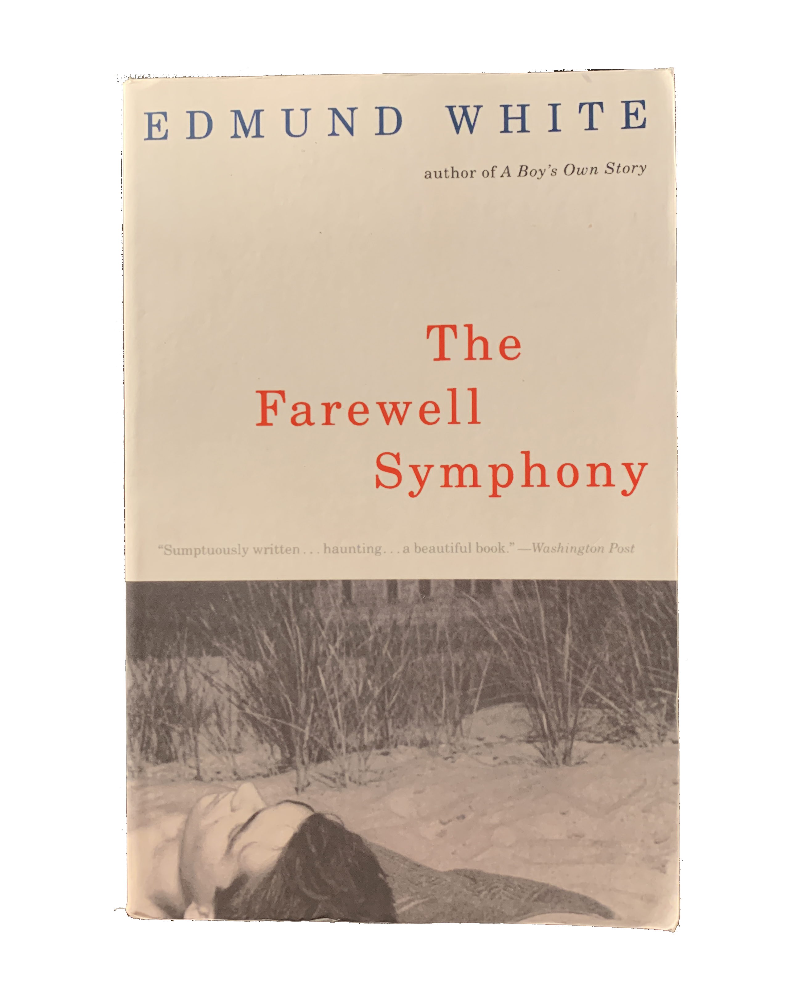
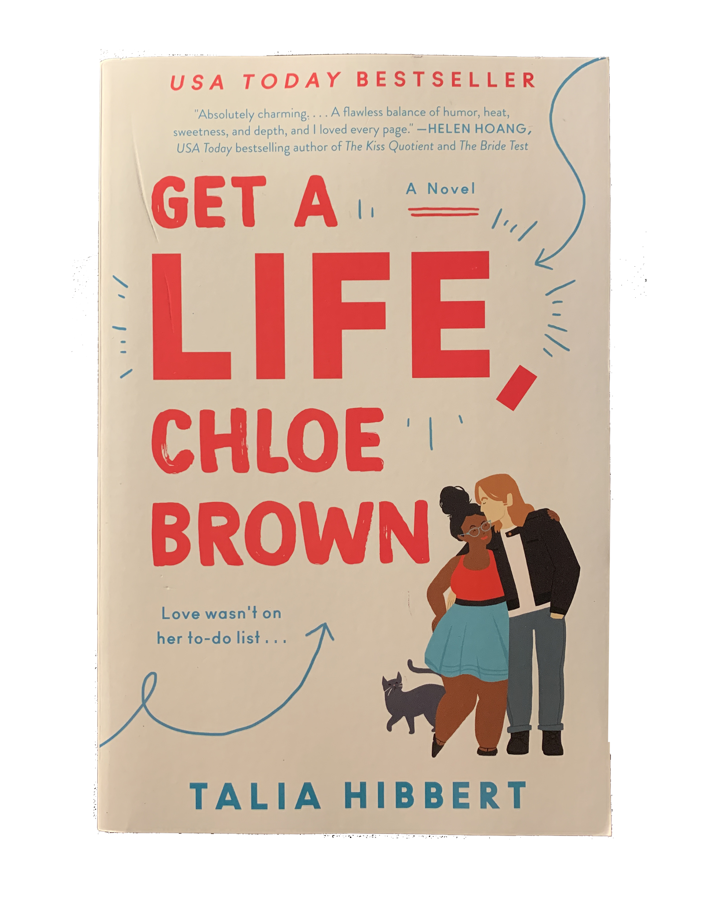

blurbs of the books
/blərb/
noun
plural noun: blurbs
a short description of a book, movie, or other product written for promotional purposes and appearing on the cover of a book or in an advertisement.
the elegant universe: superstrings, hidden dimensions and the quest for the ultimate theory
by Brian Greene
Brian Greene, one of the world's leading string theorists, peels away layers of mystery to reveal a universe that consists of eleven dimensions, where the fabric of space tears and repairs itself, and all matter―from the smallest quarks to the most gargantuan supernovas―is generated by the vibrations of microscopically tiny loops of energy. The Elegant Universe makes some of the most sophisticated concepts ever contemplated accessible and thoroughly entertaining, bringing us closer than ever to understanding how the universe works.
All the Light We Cannot See
by Anthony Doerr
Marie-Laure lives with her father in Paris within walking distance of the Museum of Natural History where he works as the master of the locks. When she is six, she goes blind, and her father builds her a model of their neighborhood—every house, every sewer drain—so she can memorize it with her fingers and navigate the real streets with her feet and cane. When the Germans occupy Paris in June of 1940, father and daughter flee to Saint-Malo on the Brittany coast, where Marie-Laure's agoraphobic great uncle lives in a tall, narrow house by the sea wall.
In another world in Germany, an orphan named Werner grows up with his younger sister, Jutta, both enchanted by a crude radio Werner finds. He becomes a master at building and fixing radios, a talent that wins him a place at an elite and brutal military academy and, ultimately, makes him a highly specialized tracker of the Resistance. Werner travels through the heart of Hitler Youth to the far-flung outskirts of Russia, and finally into Saint-Malo, where his path converges with Marie-Laure's.
Doerr's gorgeous combination of soaring imagination with observation is electric. Deftly interweaving the lives of multiple characters, Doerr illuminates the ways, against all odds, people try to be good to one another.
Bee Season
by Myla Goldberg
Eliza Naumann, a seemingly unremarkable nine-year-old, expects never to fit into her gifted family: her autodidact father, Saul, absorbed in his study of Jewish mysticism; her brother, Aaron, the vessel of his father's spiritual ambitions; and her brilliant but distant lawyer-mom, Miriam. But when Eliza sweeps her school and district spelling bees in quick succession, Saul takes it as a sign that she is destined for greatness. In this altered reality, Saul inducts her into his hallowed study and lavishes upon her the attention previously reserved for Aaron, who in his displacement embarks upon a lone quest for spiritual fulfillment. When Miriam's secret life triggers a familial explosion, it is Eliza who must order the chaos.
Myla Goldberg's keen eye for detail brings Eliza's journey to three-dimensional life. As she rises from classroom obscurity to the blinding lights and outsized expectations of the National Bee, Eliza's small pains and large joys are finely wrought and deeply felt.
Not merely a coming-of-age story, Goldberg's first novel delicately examines the unraveling fabric of one family. The outcome of this tale is as startling and unconventional as her prose, which wields its metaphors sharply and rings with maturity. The work of a lyrical and gifted storyteller, Bee Season marks the arrival of an extraordinarily talented new writer.
The Beautiful Room Is Empty
by Edmund White
When the narrator of White's poised yet scalding autobiographical novel first embarks on his sexual odyssey, it is the 1950s, and America is "a big gray country of families on drowsy holiday." That country has no room for a scholarly teenager with guilty but insatiable stirrings toward other men. Moving from a Midwestern college to the Stonewall Tavern on the night of the first gay uprising--and populated by eloquent queens, butch poseurs, and a fearfully incompetent shrink--The Beautiful Room is Empty conflates the acts of coming out and coming of age.

The Farewell Symphony
by Edmund White
Following >A Boy's Own Story (now a classic of American fiction) and his richly acclaimed The Beautiful Room Is Empty, here is the eagerly awaited final volume of Edmund White's groundbreaking autobiographical trilogy.
Named for the work by Haydn in which the instrumentalists leave the stage one after another until only a single violin remains playing, this is the story of a man who has outlived most of his friends. Having reached the six-month anniversary of his lover's death, he embarks on a journey of remembrance that will recount his struggle to become a writer and his discovery of what it means to be a gay man. His witty, conversational narrative transports us from the 1960s to the near present, from starkly erotic scenes in the back rooms of New York clubs to episodes of rarefied hilarity in the salons of Paris to moments of family truth in the American Midwest. Along the way, a breathtaking variety of personal connections--and near misses--slowly builds an awareness of the transformative power of genuine friendship, of love and loss, culminating in an indelible experience with a dying man. And as the flow of memory carries us across time, space and society, one man's magnificently realized story grows to encompass an entire generation.
Sublimely funny yet elegiac, full of unsparingly trenchant social observation yet infused with wisdom and a deeply felt compassion, The Farewell Symphony is a triumph of reflection and expressive elegance. It is also a stunning and wholly original panorama of gay life over the past thirty years--the crowning achievement of one of our finest writers.
Everything Beautiful Began After
by Simon Van Booy
“Apowerful meditation on the undying nature of love and the often cruel beauty ofone's own fate. This is a novel you simply must read!” —Andre Dubus III, New York Times bestselling author of Townie
From Simon Van Booy, the award-winning author of Love Begins in Winter and The Secret Lives of People in Love, comes a debut novel of longing and discovery amidst the ruins of Athens. With echoes of Nicole Krauss's The History of Love and Charles Baxter's The Feast of Love, Van Booy's resonant tale of three isolated, disaffected adults discovering one another in Greece is the compelling product of an inquisitive, visionary talent. In the words of Robert Olen Butler, Pulitzer Prize-winning author of A Good Scent from a Strange Mountain, “Simon Van Booy knows a great deal about the complex longings of the human heart.”
The Emotional Life of Your Brain
by Richard J. Davidson, Ph.D. with Sharon Begley
Richard Davidson's 2012 New York Times best seller offers a new model for understanding our emotions - their origins, their power and their malleability. He has discovered that personality is composed of six basic emotional "styles," including resilience, self-awareness, and attention. Our emotional fingerprint results from where on the continuum of each style we fall. He explains the brain circuits that underlie each style in order to give us a new model of the emotional brain, one that will even go so far as to affect the way we treat conditions like autism and depression. And, finally, he provides strategies we can use to change our own brains and emotions-if that is what we want to do.
Things I Have Withheld
by Kei Miller
In this astonishing collection of essays, the award-winning poet and novelist Kei Miller explores the silence in which so many important things are kept. He examines the experience of discrimination through this silence and what it means to breach it: to risk words, to risk truths. And he considers the histories our bodies inherit - the crimes that haunt them, and how meaning can shift as we move throughout the world, variously assuming privilege or victimhood.
Through letters to James Baldwin, encounters with Liam Neeson, Soca, Carnival, family secrets, love affairs, white women's tears, questions of aesthetics and more, Miller powerfully and imaginatively recounts everyday acts of racism and prejudice.
With both the epigrammatic concision and conversational cadence of his poetry and novels, Things I Have Withheld is a great artistic achievement: a work of beauty which challenges us to interrogate what seems unsayable and why - our actions, defence mechanisms, imaginations and interactions - and those of the world around us.
Everything I Never Told You
by Celeste Ng
Lydia is dead. But they don't know this yet.
So begins this exquisite novel about a Chinese American family living in 1970s small-town Ohio. Lydia is the favorite child of Marilyn and James Lee, and her parents are determined that she will fulfill the dreams they were unable to pursue. But when Lydia's body is found in the local lake, the delicate balancing act that has been keeping the Lee family together is destroyed, tumbling them into chaos.
A profoundly moving story of family, secrets, and longing, Everything I Never Told You is both a gripping page-turner and a sensitive family portrait, uncovering the ways in which mothers and daughters, fathers and sons, and husbands and wives struggle, all their lives, to understand one another.

Get a Life, Chloe Brown
by Talia Hibbert
Chloe Brown is a chronically ill computer geek with a goal, a plan, and a list. After almost—but not quite—dying, she's come up with seven directives to help her “Get a Life”, and she's already completed the first: finally moving out of her glamorous family's mansion. The next items?
- Enjoy a drunken night out.
- Ride a motorcycle.
- Go camping.
- Have meaningless but thoroughly enjoyable sex.
- Travel the world with nothing but hand luggage.
- And... do something bad.
But it's not easy being bad, even when you've written step-by-step guidelines on how to do it correctly. What Chloe needs is a teacher, and she knows just the man for the job.
Redford 'Red' Morgan is a handyman with tattoos, a motorcycle, and more sex appeal than ten-thousand Hollywood heartthrobs. He's also an artist who paints at night and hides his work in the light of day, which Chloe knows because she spies on him occasionally. Just the teeniest, tiniest bit.
But when she enlists Red in her mission to rebel, she learns things about him that no spy session could teach her. Like why he clearly resents Chloe's wealthy background. And why he never shows his art to anyone. And what really lies beneath his rough exterior…